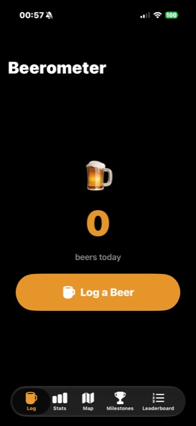
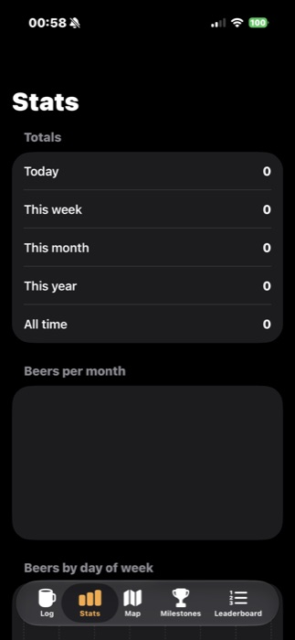
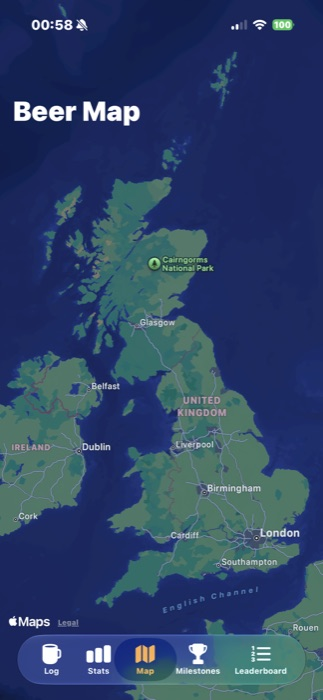
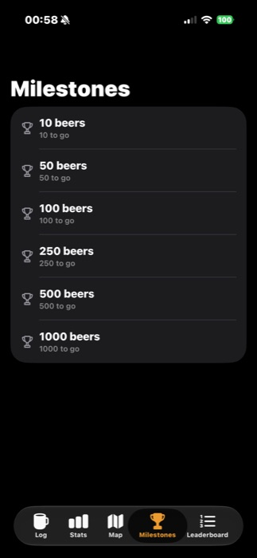

Beerometer
An iOS + watchOS app built solo, idea to App Store submission in a few days.
Overview
Beerometer started as a joke: a friend has a "beerometer" app on his Garmin watch and there was no equivalent for Apple Watch, so I built one myself. It logs a beer with a single tap — from a Home Screen widget, the Watch app, or Siri — with no account or sign-up, just your existing iCloud account.
Built solo in SwiftUI and SwiftData across three targets — the iOS app, a WidgetKit extension, and a companion watchOS app — sharing a single codebase via one folder wired into all three build targets.

One Action, Every Surface
Rather than duplicating "insert a beer" logic in the app, the widget and the Watch app, every entry point — the interactive widget button, the Watch button, the in-app button, and a Siri phrase — routes through a single App Intent. It's the only place that touches the database, which made three surfaces behave identically for free.
Data is stored with SwiftData configured with both an App Group container (instant sharing between the app and widget on the same phone) and a CloudKit private database (syncing between the phone and Watch, which are different physical devices and can't share an App Group at all).

Live Activities from the Watch
Logging a beer starts or updates a Live Activity on the Lock Screen and Dynamic Island showing the running session count. The catch: ActivityKit doesn't exist on watchOS, so a beer logged on the Watch can't start one directly. A WatchConnectivity message tells the phone to do it instead, with eventual CloudKit sync as a fallback if the phone isn't reachable.
The session ends itself after three hours of inactivity using the Live Activity's
staleDate, cleaned up lazily on the next app or widget refresh — iOS
doesn't offer a reliable way to fire an exact background timer without a server.

A Leaderboard Without Accounts
Comparing counts with a friend needs data visible across two different people's iCloud accounts — which a private CloudKit database can never do. Instead the leaderboard uses CloudKit's public database: pick a display name and make up a group code, and anyone who enters the same code sees the same board, keyed by each person's CloudKit user record ID so phone and Watch both update one row.
No login, no server I have to run — just a shared code, which is all a leaderboard between friends really needs.

What I Learned
Most of the real complexity wasn't the app — it was the App Store pipeline around it.
A build signed for distribution hits CloudKit's production environment
immediately, so the leaderboard's schema has to be deployed from Development to
Production manually before submitting, or it silently breaks for real users despite
working perfectly in testing. Custom CloudKit fields also need an explicit queryable
index on the built-in recordName field before any query works at all —
not just the field you're actually filtering on.
I also learned that App Store Connect's required screenshot sizes lag behind current hardware — a screenshot straight off an iPhone 17 doesn't match any accepted size bucket, so it needs scaling and cropping to fit exactly, not just resizing.